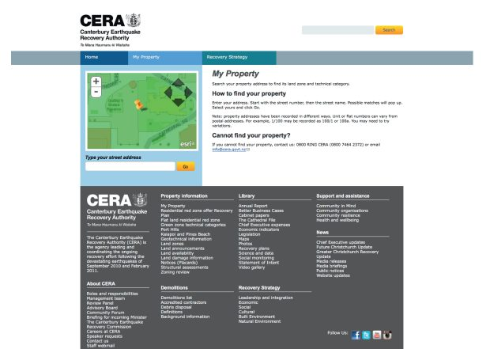
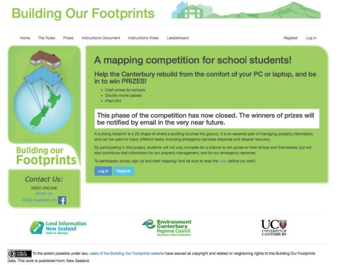

در فوریه ۲۰۱۱، شهر کرایستچرچ در اثر زلزله شدیدی ویران شد و منجر به کشته شدن ۱۸۵ نفر و آسیب قابلتوجه به بخشهای بزرگی از شهر شد که پیشازاین به دلیل زلزله قبلی تضعیفشده بود. در واکنش به زلزله، داوطلبان و مسئولان در سازمانهای بازیابی از داده باز، ابزارهای داده باز، اشتراکگذاری دادههای قابلاعتماد و جمعسپاری برای توسعه طیف وسیعی از محصولات و خدمات موردنیاز برای پاسخدهی موفقیتآمیز به شرایط در حال ظهور استفاده کردند. این برنامهها شامل یک اپلیکیشن تحت وب اطلاعات اضطراری مبتنیبر جمعیت بود که ۷۰۰۰۰ بازدید را در ۴۸ ساعت اول پس از زلزله ایجاد کرد. مجموعهای از قراردادهای به اشتراکگذاری دادههای سیستم اطلاعات جغرافیایی (GIS) بین آژانسهایی که ارائه موفق خدمات نقشهبرداری را در طول پاسخدهی و بازیابی ممکن ساختند؛ وبسایتهایی که با استفاده از دادهها دارایی باز که شهروندان را قادر میساخت وضعیت خانهها و زمینهای خود را بررسی کنند و میلیونها بازدید در عرض چند ساعت پسازانتشار اطلاعات ایجاد کردند؛ یک نمایشگر نیت ساختوساز که با استفاده از داده باز و ابزار داده باز ایجادشده بود در سال اول ۴ میلیون دلار نیوزلند در هزینههای ساختوساز صرفهجویی کرد؛ و یک رقابت برونسپاری برای کودکان مدرسهای که بیش از ۱۸۰۰۰ سرنخ ساختمان جدید برای پایگاههای داده دارایی باز با هزینه ۰.۰۲ دلار برای هر سرنخ ایجاد کردند.
- دادههای نقشه و دارایی باز را میتوان با به اشتراکگذاری داده مطمئن و ابزارهای منبع باز جفت کرد تا راهحلهای سریع و مؤثر برای پاسخ به بحران ایجاد کند.
- ظرفیت بازیابی و بازسازی بهسرعت میتواند از یک زیرساخت داده از قبل موجود و بهخصوص در یک مجموعه داده قوی و معتبر بهرهمند شود.
- بحرانها میتوانند پیششرطهای بسیار خوبی برای نوآوری، ازجمله آزادی و اجازه نوآوری فراهم کنند.
- تکنیکهای توسعه و مدیریت چابک بهطور خاص برای پاسخ اضطراری مناسب هستند.
- جمعآوری اطلاعات اضطراری توسط افراد میتواند راهی را برای مشارکت داوطلبان احتمالی در تلاشهای امدادرسانی بلایای طبیعی فراهم کند.
«از به اشتراک گذاشتن [دادهها] نترسید. اگر میتوانید دادهها غیرقابل شناسی کنید، آنها را به اشتراک بگذارید و مردم از آنها استفاده خواهند کرد».
Iain Campion، رهبر سابق تیم برنامه، محیطزیست Canterbury
۱. پیشینه و زمینه
نیوزیلند کشوری با درآمد بالا در جزیره اقیانوس آرام با جمعیت ۴.۶ میلیون نفر است. این کشور در سال ۲۰۱۳ در فهرست توسعه انسانی سازمان ملل در رده هفتم قرار داشت. این کشور در حلقه آتش اقیانوس آرام واقعشده است، جایی که صفحات استرالیا و اقیانوس آرام به هم میرسند و از نظر زمینلرزه فعال هستند. این کشور هرساله در حدود ۱۴، ۰۰۰ زمینلرزه را تجربه میکند که حدود ۱۵۰ تا ۲۰۰ مورد از آنها بهاندازهای شدید هستند که قابل احساس باشند. بیشتر این زمینلرزهها در گسل آلپ رخ میدهند که در مرکز جزیره جنوبی و در امتداد گسل دیگری که از جنوب غربی به شمال شرقی از طریق جزیره مرکزی شمالی امتداد دارد، قرار دارد. در ۲۰۰ سال گذشته، نیوزیلند ۱۲ زمینلرزه بزرگ را تجربه کرده است که منجر به تلفات جانی شده است.
به دلیل این تاریخچه زمینلرزه، نیوزیلند یک پیشرو جهانی شناختهشده در مهندسی زلزله است که از تجارب خود برای یادگیری درسهایی از یک سری زلزلههای مرگبار در اواخر قرن نوزدهم و اوایل قرن بیستم استفاده کرد. این کشور برخی از سختگیرانهترین استانداردهای ساختمانی در جهان را دارد که الزاماتی را برای چگونگی عملکرد ساختمانها در زلزله تعیین میکند. دستورالعملهای ساختمانی کنونی نیوزیلند نیازمند سازههایی با عمر مفید ۵۰ ساله هستند تا بتوانند بارهای پیشبینیشده ناشی از زلزلههایی با بزرگی که انتظار میرود هر ۵۰۰ سال یکبار رخ دهند را تحمل کنند. نیوزیلند نیز یکی از تنها کشورهایی است که از طریق کمیسیون زلزله (EQC) دارای بیمه دولتی ملی زلزله برای صاحبان خانه است.
داده باز در نیوزیلند
نیوزیلند سابقه بسیار خوبی از آزادی مطبوعات و شفافیت دولت دارد. بر اساس گزارش Freedom House، مطبوعات نیوزیلند آزاد در نظر گرفته میشوند و این کشور در شاخص آزادی مطبوعات جهانی ۲۰۱۵ توسط خبرنگاران بدونمرز در رده ششم قرار گرفت. نیوزیلند در سال ۲۰۱۴ از نظر شاخص ادراک فساد سازمان شفافیت بینالمللی در رتبه دوم و در دو نظرسنجی اخیر بودجه باز (۲۰۱۲ و ۲۰۱۵) مشارکت بینالمللی بودجه در رتبه اول قرار گرفت.
نیوزیلند در ارزیابی داده باز (Open Data Barometer) در رتبه چهارم قرار دارد و بهعنوان یک کشور با «ظرفیت بالا» در نظر گرفته میشود، به این معنی که این کشور دارای سیاستهای داده باز موجود، پشتیبانی سیاسی و فرهنگ عمومی باز بودن داده است. این کشور قصد خود برای پیوستن به مشارکت دولت باز (OGP) در سال ۲۰۱۳ را اعلام کرد و در اکتبر ۲۰۱۴ اولین طرح عملی خود را منتشر کرد و فرآیند پیوستن به OGP را تکمیل کرد.
در اگوست ۲۰۱۱، اعلامیه دولت باز و شفاف توسط دولت نیوزیلند تصویب شد. بر اساس این سیاست، سازمانهای دولتی مرکزی مستلزم به همکاری شدند، شرکتهای دولتی تشویق شدند، و دولت محلی دعوت شد تا بهطور فعال دادههای ارزشمند و غیرشخصی را برای استفاده مجدد منتشر کند. در طول سال ۲۰۱۱، دولت نیوزیلند چارچوب دسترسی آزاد و صدور مجوز دولت نیوزیلند (NZGOAL) را اجرا کرد که یک پروتکل دسترسی باز و صدور مجوز باز برای سازمانهای دولتی بود تا در زمان انتشار داده برای استفاده مجدد از آن استفاده کنند. این پروتکل حق انتشار داده غیرشخصی را با استفاده از بازترین مجوز اCreative Commons و انتشار داده بدون حق کپیرایت بدون هیچ محدودیتی در استفاده از آن را تشویق میکند، که همگی به نفع بهرهبرداری از مزایای اقتصادی و خلاقانه باز کردن داده برای استفاده مجدد است. از دسامبر ۲۰۱۵، پورتال داده دولت نیوزیلند data.govt.nz، درمجموع ۳۸۱۳ مجموعه داده را فراهم کرد.
۲. توصیف و آغاز پروژه
در سالهای ۲۰۱۰ و ۲۰۱۱، شهر کرایستچرچ، سومین شهر بزرگ نیوزیلند، با جمعیت ۳۷۵، ۰۰۰ نفری، مجموعهای از زلزلههای ویرانگر را تجربه کرد. در ۴ سپتامبر ۲۰۱۰، یک زلزله به بزرگی ۱ / ۷ ریشتر باعث خسارات گسترده به اموال و جراحات جزئی شد، اما تلفات جانی نداشت. تقریباً شش ماه بعد، در ۲۲ فوریه ۲۰۱۱، قبل از اینکه شهر بهطور کامل از اولین زلزله بازیابی شود، دومین زلزله شدید را تجربه کرد. درحالیکه ضعیفتر از اولی بود و ۱۲ ثانیه طول کشید، ترکیب ناخوشایندی از عوامل - عمق کم، شیب زیاد و مرکز زلزله واقع در ۱۰ کیلومتری مرکز شهر - به این معنی بود که زلزله دوم برخی از شدیدترین و خشونتآمیزترین لرزشهای ثبتشده در یک منطقه شهری را ایجاد کرد. اوج شتاب زمین در طول زلزله در بخشهایی از کرایستچرچ مرکزی به ۲ گرم رسید (در مقایسه با ۰.۵ گرم در زلزله هائیتی در سال ۲۰۱۰)، و شاهدان عینی گزارش دادند که مردم بهطور واقعی به هوا پرتاب میشدند.
جولیان کارور، مدیرعامل سابق اداره بازیابی زلزله کانتربری (CERA)، تجربه زلزله را اینگونه توصیف میکند:
«۲۲ فوریه ۲۰۱۱، ساعت ۱۲:۵۱ بعدازظهر، من از خانه کار میکنم، روی تختم دراز کشیدهام و ایمیلی را روی گوشی آیفونم میخوانم. سی ثانیه بعد، شهر من، زندگی من و آینده من بهطور غیرقابل بازگشتی تغییر کرده بود. هر چیزی که پیچنشده بود روی زمین بود و نیمی از آنها خردشده بودند. مانیتورهای کامپیوتر، تلویزیون، قفسههای کتاب، غذای داخل یخچال! برق قطع شد و سپس برای پنج روز وصل نشد. تماسهای موبایلی برای چند دقیقه برقرار بودند و سپس قطع شدند. پیامکها بعد از یک ساعت در برخی مناطق جواب میدادند. تنها چیزی که تا حدی قابلاعتماد بود، توییتر بر بستر 3G بود».
این زلزله خسارات ساختاری قابلتوجهی به ساختمانهای تضعیفشده شهر وارد کرد. قوانین سختگیرانه ساختمانی کشور و مدت کوتاه زلزله باعث کاهش خسارات شد، اما ۱۸۵ نفر کشته شدند که نیمی از آنها در اثر ویرانی یک ساختمان جان باختند. این دومین فاجعه طبیعی مرگبار نیوزیلند بود. تا آوریل ۲۰۱۳، هزینه بازسازی ۴۰ میلیارد دلار نیوزیلند بود.
این بازیابی بهطور قابلتوجهی توسط تعدادی از پروژهها که از دادههای باز، ابزارهای منبع باز، جمعسپاری و اشتراکگذاری دادههای قابلاعتماد استفاده میکنند، کمک شایانی کرد. این ابزارها، که در زیر توضیح میدهیم، به شیوهای بسیار سریع و تکراری توسعه یافتند. آنها به شهر اجازه دادند که بهسرعت و با هزینه ارزانتر بهبود یابد؛ آنها باهم، پتانسیل عظیم نوآوری و پروژههای داده محور را در میانه یک بحران و بهعنوان پاسخی به بلایای طبیعی و دیگر بلایای طبیعی پیشنهاد میکنند.
نقشه بازیابی کانتربری (Eq.org.nz)
بلافاصله پس از زلزله ۲۰۱۱، بخشهای قابلتوجهی از شهر تا سه هفته بدون آب یا فاضلاب بودند، زیرا تا ۸۰ درصد زیرساخت زیرزمینی شهر آسیبدیده بود. جادهها در برخی از نقاط شهر به دلیل خرابی یا روان شدن خاک قابلدسترسی نبودند و کانالهای ارتباطی معمول بهطور قابلتوجهی در اثر قطع برق مختل شده بودند. یکی از مهمترین مشکلات نبود اطلاعات بود، چراکه ساکنان تلاش میکردند تا بفهمند برای کالاها و خدمات ضروری به کجا مراجعه کنند. منابع رسمی وجود داشتند: یک وبسایت اطلاعات اضطراری با میزبانی ابر (canterburyearthquake.govt.nz) بلافاصله پس از زلزله راهاندازی شد، زمانی که مشخص شد که سرورهای شورای شهر به دلیل قطع برق، آسیب به ساختمان و ظرفیت ناکافی، بهدرستی وظیفه رسیدگی به تقاضای اطلاعات اضطراری را انجام نمیدهند. بااینحال، به گفته Carver، این وبسایت قابلیتهای نقشهبرداری نداشت، و به یک تیم کوچک و بیشفعال وابسته بود - «چهار نفر در اطراف یک میز سهپایه با لپتاپ نشسته بودند» - که بهصورت فیزیکی در داخل مرکز عملیات اضطراری در مرکز شهر بهشدت آسیبدیده قرار داشت.
در عرض چند ساعت پس از زلزله، گروهی از داوطلبان ماهر در نیوزیلند و خارج از کشور، با استفاده از Ushahidi - یک پلتفرم منبع باز واکنش به فاجعه با استفاده از داده نقشه باز که پس از زلزله هائیتی با موفقیت به کار گرفتهشده بود، به این کاستیها پاسخ دادند تا Eq.org.nz، یک نقشه فاجعه جمعسپاریشده را ایجاد کنند.
این سایت با جمعسپاری اطلاعات در مورد آسیبها، بسته شدن جادهها و در دسترس بودن منابع و خدمات ضروری و پیشنهادان یا درخواستهای کمک، به ساکنان کمک کرد تا محیط شهری پس از زلزله را هدایت کنند. در آن زمان، تیم مک نامارا، یکی از رهبران Eq.org.nz، این پروژه را چنین خلاصه کرد: «ما از مردم میخواهیم که به ما بگویند که کجا هستند و چه میبینند - اگر جادهها مسدود شدهاند، کدام [فروشگاه] باز است، کدام [فروشگاه سختافزاری] باز است، کدام مرکز پزشکی باز است، کدام تلفن کار میکند و دسترسی به اینترنت چگونه است». مشارکتکنندگان میتوانستند اطلاعات را در یک فرم وبسایت، یا از طریق ایمیل، کد پیامک، یا توییتر با هشتگهای #eqnz یا #helpme برای درخواستهای اضطراری وارد کنند. مسئولان انسانی هر پیام ورودی را که حاوی یک واقعیت و یک مکان بود، طبقهبندی کردند و آن را بر روی یک نقشه رسم کردند. داوطلبان Eq.org.nz قادر به بررسی، دستهبندی و انتشار گزارشها ظرف پنج دقیقه پس از دریافت یک پیام جدید بودند. این دادهها از طریق یک رابط برنامه کاربردی وبباز به اشتراک گذاشته شد که یک مجموعه ادغام و آزاد کردن دادههای آدرس است. مطالعات موردی در طی دو API موبایلی آینده منتشر خواهد شد که به اشخاص ثالث، ازجمله محیط کانتربری، اجازه میدهد تا اطلاعات سایت را با دادههای خود ترکیب کنند.
تا ۲۴ فوریه ۲۰۱۱ - دو روز پس از زلزله - این سایت ۷۷۹ گزارش، ۷۸۱ مکان مختلف و تقریباً ۷۰۰۰۰ بازدیدکننده منحصربهفرد گرد هم آورده بود. همچنین به اطلاعرسانی در مورد فعالیتهای داوطلبان محلی مانند ارتش دانشجویی و ارتش فدرال کمک کرد، که هزاران داوطلب را برای کمک به پاکسازی بیش از ۳۶۰۰۰۰ تن گلولای تهنشینشده ناشی از حرکت کردن املاک مسکونی در بیش از ۸۰۰۰۰ ساعت کار داوطلبانه فراهم کرد. داوطلبان Ushahidi بازخورد کاربرانی مانند یک دیابتی کرایستچرچ را گزارش دادند که از آنها به خاطر اینکه به او گفته بودند کجا میتواند انسولین بگیرد، تشکر کرده بودند. این سایت به مدت سه هفته پس از زلزله فعال بود، تا اینکه برق و کانالهای ارتباطی عادی بهطور کامل احیا شدند.
GIS و به اشتراکگذاری دادههای قابلاعتماد
بلافاصله پس از زلزله دوم، مقامات مسئول دادههای GIS در شورای شهر کرایستچرچ و محیط کانتربری خود را غرق در درخواستهای دفاع مدنی و خدمات اضطراری برای نقشهها بهمنظور کمک به جستجو و نجات و سایر واکنشهای اضطراری یافتند. درخواستها بهسرعت از ظرفیت آنها پیشی گرفت، و تیم میدانست که باید نیاز به کمک خارجی دارد. درنهایت، آنها راهحلهایی را در طرحهای مختلف به اشتراکگذاری دادهها یافتند.
تیمهای داوطلب از شورای شهر Wellington و شورای منطقهای Wellington بزرگ، و Eagle Technology - یک شرکت فنآوری اطلاعات مستقر در Wellington که سیستمهای باز و پلتفرمهای GIS را مدیریت میکرد - همگی کمک کردند، اما راهحل سنتی - فرستادن داده بر روی دیویدی یا هارددیسک برای داوطلبان Wellington - بسیار کند بود. تیم داده GIS کرایستچرچ اجازه باز کردن داده خود را به دست آورد تا بتواند آزادانه تحت مجوز Creative Commons مورداستفاده قرار گیرد و تیمهای Wellington را قادر سازد تا نقشههایی را برای کمک به واکنش اضطراری تهیه کنند. دادههای استاتیک، ازجمله تصاویر هوایی کرایستچرچ که در عرض ۴۸ ساعت از زلزله گرفته شد، بهصورت رایگان در توزیعکننده داده جغرافیایی Koordinates.com آپلود شد و در دسترس قرار گرفت، درحالیکه دادههای پویا از طریق استانداردهای مکانی باز برای تیمهای داده نقشهبرداری اضطراری در دسترس قرار گرفت.
به اشتراکگذاری داده مشابه پس از ایجاد CERA رخ داد. شش هفته پس از زلزله دوم، راهحلهای دفتر CERA و فناوری اطلاعات راهاندازی شدند و هیچ نقشه، GIS یا عملکرد دادهای نداشتند. کارور - مدیر ارشد اجرایی - برای کمک به زیرساخت داده GIS به اطلاعات زمین نیوزیلند (Land Information New Zealand (LINZ)) مراجعه کرد: «آنها گفتند که ما مجموعهای از خدماتی را داریم که میتوانیم برای شما فراهم کنیم و سپس تمام داده باز را از خدمات داده متعلق به LINZ تغذیه کنیم و این آغاز کار شما خواهد بود». کارور پس از ایجاد ظرفیت ترسیم نقشه CERA، شروع به درخواست کمک از شورای شهر کرایستچرچ کرد، که با تقاضاهای زیادی بهمنظور ایجاد نقشهها برای کارکنان تخریب CERA که در شهر مرکزی کار میکردند، مواجه بود. شورای شهر کرایستچرچ فهرستی از تمام مجموعه دادههای خود را که میتوانست بهعنوان خدمات داده باز در دسترس بگذارد، در اختیار CERA قرار داد که سپس توسط CERA اولویتبندی شد. سپس دادهها از طریق فیدهای داده باز یا امن باز شد و تیم GIS CERA قادر به تجزیهوتحلیل و تهیه نقشه برای شورای شهر کرایستچرچ بود.
این کار الگویی از به اشتراکگذاری و باز کردن دادههای GIS بین سازمانهای بازیابی زلزله را آغاز کرد. همانطور که کارور بیان کرد:
«این [راهحل] در مقیاس نیوزیلند - مقیاس کرایستچرچ - بود. شما میتوانید چهار یا پنج نفر را پیدا کنید … که نیاز را درک میکردند، درک میکردند که کاربران چه میخواهند، درک فنی داشتند و صلاحیت انجام این کار را داشتند… در یک اتاق، هر دو هفته یکبار، [با گفتن] OK، حالا ما باید این را اضافه کنیم، یا تغییر دهیم، یا این را باز کنیم. این بسیار چابک و باقابلیت تکرار بود».
سایتهای Landcheck و My Property
تا اواخر ژوئن ۲۰۱۱، سازمان بازیابی زلزله کانتربری، ارزیابی و منطقهبندی ژئوتکنیکی املاک مسکونی خود را تکمیل کرد تا سطح خطر یک ناحیه مشخص در صورت وقوع زلزله را نشان دهد. اکنون به راهی نیاز داشت تا این تصمیمات منطقهای را به مردم کرایستچرچ منتقل کند. همانطور که کارور در یک پست وبلاگ به یاد میآورد: «مانند هر چیز دیگری در بازیابی، چارچوبهای زمانی فشرده بودند. مردم میخواهند تصمیمات دولت بر اساس شواهد علمی و اقتصادی معتبر باشد. آنها همچنین در سریعترین زمان ممکن میخواهند بدانند که کجا ایستادهاند (و میتوانند زندگی کنند). CERA به راهی نیاز داشت تا به مردم اجازه دهد تا دقیقاً ببینند خانه آنها در کدام منطقه قرار دارد. این امر نیازمند یک وبسایت تعاملی بود، که قادر به تحمل بار اولیه عظیمی باشد، که در یک چارچوب زمانی بسیار کوتاه اجرا میشود».
راهحل، مشارکت بین شرکت مهندسی مسئول ایجاد نقشههای منطقهبندی زلزله و Trade Me - بزرگترین سایت حراج آنلاین نیوزیلند - بود. Trade Me در عرض چهار روز با انجام کار حرفهای، سایت Landcheck را با استفاده از دادههای دارایی و آدرس باز و همچنین با استفاده از مزارع سرور خود در Auckland و Wellington ساختند. کارور گزارش میدهد که سایت در ساعت اول ۲ میلیون بازدید از صفحه و ۵ میلیون بازدید از صفحه و ۳ / ۳ میلیون جستجوی اموال شخصی را در روز اول دریافت کرده است.
سه ماه بعد، در اکتبر ۲۰۱۱، هنگامیکه CERA نتایج مطالعات ژئوتکنیکی در سراسر شهر را اعلام کرد، Landcheck با My Property جایگزین شد. My Property به ساکنان اجازه داد تا نهتنها منطقهبندی ملک خود را بررسی کنند، بلکه طبقهبندی فنی زمین را نیز بررسی کنند که نحوه عملکرد آن در زلزلههای آینده و نوع فونداسیون موردنیاز برای ساختوساز جدید را تعریف میکند. نقشههای دسته فنی در سایت My Property بر روی همان نمایشگر GIS و داده باز ساخته شدند که برای Landcheck استفادهشده بود و شامل عکسها، نقشهها، منطقهبندی و دادههای با دستهبندی فنی بود. اگرچه کارور خاطرنشان میکند که تعیین ارزش پولی برای مزایای فراهمشده توسط این سایتها دشوار است، اما آنها یک خدمات عمومی ضروری بودند که بهطور گسترده توسط عموم مردم مورد دسترسی قرار میگرفت، و به شهروندان در مورد ایمنی اموالشان در صورت ادامه پسلرزهها و اطلاعات معتبر در مورد زمینه قانونی برای تعمیرات و بازسازی اطمینان میداد.

پلتفرم Forward Works Viewer
در طول تعمیر و بازسازی شهر مرکزی - که در زلزله فوریه ۲۰۱۱ بهشدت آسیبدیده بود - CERA خود را موظف به انجام کارهای تقریباً غیرممکن کرد: تخریب ۱۲۰۰ ساختمان تجاری، تعمیر کلیه زیرساختهای زیرزمینی (فاضلاب، آبهای سطحی، تأسیسات آب، برق و پهنای باند)، و آغاز روند بازسازی ساختمانهای جدید، همه در یک منطقه جغرافیایی کوچک و بهطور همزمان. کارور در مصاحبهای گفت: «تنها راه انجام این کار این بود که همه بتوانند مقاصد ساختوساز روبهجلو دیگران را از قبل ببینند تا از درگیریها و تأخیرهای پرهزینه اجتناب کنند».
LINZ، CERA و دیگر سازمانهایی که بازسازی کانتربری را هماهنگ میکردند، با پلتفرم Forward Works Viewer پاسخ دادند، ابزاری که به آن آژانسها و دیگر کاربران بخش دولتی و خصوصی یک دیدگاه آنلاین مشترک از تعمیر زیرساختهای افقی، ساختمانهای برنامهریزیشده و دیگر ساختوسازها داد. این نمایشگر به کاربران اجازه میدهد تا پروژهها و تأثیرات آنها را بهصورت فضایی و در طول زمان مدیریت و مشاهده کنند، و برخوردهای بالقوه و فرصتهای همکاری احتمالی را شناسایی کنند.
توسعه Forward Works، که با استفاده از روش توسعه نرمافزار چابک Scrum انجام شد، به شرکتهایی با تخصص جغرافیایی، مهندسی و توسعه وب واگذار شد. این سایت بهشدت بر روی دادههای شبکه جادهها و دارایی باز، ابزار منبع باز، و استانداردهای مکانی باز تمرکز دارد. بااینحال، به گفته کارور، دادههای شبکه جاده عمومی باز محدودیتهای قابلتوجهی داشت.
«داده شبکه جاده تنها خط مرکزی جاده بود… و چیزی درباره خطوط، مسیرها، پیچها و محدودیتهای دور زدن به شما نمیگفتند. ما میخواستیم که قادر به ساخت این موارد در نمایشگر Forward Works باشیم زیرا ما میخواستیم بتوانیم تأثیرات ساختوساز عمودی یا بسته شدن جادهها به دلیل تعمیر جاده بر شبکه جاده را ارزیابی کنیم. آیا این مسیر است یا آن مسیر؟ آیا بهطورکلی بسته میشود یا ظرفیت را کاهش میدهد؟ دانستن این موضوع برای مدلسازی ترافیک بسیار مهم بود، اما ما یک شبکه جادهای باز، قابلاستفاده مجدد و قابل مسیریابی نداشتیم».
راهحل، بستن قرارداد با چهار دانشجوی کارشناسی ارشد GIS به مدت دو هفته بود تا OpenStreetMap را برای منطقه مربوطه با هزینه ۱۰۰۰۰ دلار نیوزیلند، کاملاً بهروز کنند و آن را برای کرایستچرچ قابل مسیریابی کنند. سپس آنها این دادهها را در نمایشگر Forward Works با یک انتخابگر تأثیر ادغام کردند تا برنامهریزان را قادر سازند تا بهترین مسیر را برای بسته شدن انتخاب کنند.
هزینه کلی ساخت نمایشگر Forward Works ۱.۶ میلیون دلار نیوزیلند بود. یک ارزیابی LINZ در سال ۲۰۱۴ نشان داد که از زمان آغاز به کار این نمایشگر در سال ۲۰۱۳، نمایشگر Forward Works ۴ میلیون دلار نیوزیلند سود داشته است که درمجموع بیش از ۲۰ میلیون دلار پیشبینیشده است. این مزایا، نتیجه صرفهجویی در هزینه بهوسیله کاهش درگیریها و تأخیرها، عملیات مشترک جادهای و سنگربرداری، کاهش تأثیر بر سفر عمومی و بهبود مدلسازی ترافیک بود که امکان دو برابر شدن تعداد محوطهها در شهر مرکزی را فراهم میکرد، درحالیکه جریانهای ترافیکی یکسانی داشت.
رقابت Building Our Footprints
در طول بازیابی، سازمانهای دخیل در بازسازی، نقایص موجود در برخی از مجموعه دادههای مکانی و املاک را شناسایی کردند. پایگاههای داده Building Our Footprints برای شهرداریهای ماهوارهای Selwyn و Waimakariri وجود نداشت، و مجموعه داده کرایستچرچ ناقص بود که پیامدهای بالقوه برای واکنش اضطراری و بازسازی داشت. در سال ۲۰۱۴، جرمی سورینسون - کارمند LINZ که در حال انجام تحقیقات عالی برای ارزیابی قابلیت اعتماد داده جمعسپاریشده در دانشگاه کانتربری بود - با ایدهای به Environment Canterbury مراجعه کرد.
سورینسون جمعسپاری ایجاد یک پایگاه داده را به شکل رقابت برای دانشآموزان مدرسه پیشنهاد کرد. «Building Our Footprints» توسط Environment Canterbury با همکاری LINZ و دانشگاه کانتربری اجرا شد. Environment Canterbury یک برنامه تحت وب با دستورالعملها، ثبتنام و ورود به سیستم برای شرکتکنندگان ایجاد کرد که نمای ساختمانها را از عکسهای هوایی باز دیجیتالی کردند و تلاش کردند تا به یک معیار اعتماد بالای ۷۵ درصد دست یابند. اولین شرکتکنندهای که به ۷۵ درصد یا بالاتر از آن دست پیدا کرد، امتیاز آن ساختمان را دریافت کرد، و شرکتکننده با بیشترین امتیاز [در کل] برنده شد. LINZ حمایت مالی کمی برای جوایز، به شکل یک مینی آیپد برای برنده نهایی، پول نقد، و بلیتهای سینما فراهم کرد. این رقابت یک ماه به طول انجامید و ۱۸۷۸۹ نمای ساختمان ایجاد کرد، که در پایگاههای داده شورای مربوطه و OpenStreetMap ادغام شدند.
کارور تصدیق میکند که این رقابت «برای سرگرمی انجامشده است، زیرا ما میخواستیم ببینیم چه چیزی از منظر حل مشکلات جواب میدهد... به همان اندازه که مهم است، ما گروهی از بچهها را داریم که ممکن است داده باز یا فضایی یا فنآوری … را در حرفه خود در نظر نگرفته باشند، و با آن درگیر شده باشند؛ بنابراین... فقط یک مثال کوچک از ’بگذارید ببینیم که چه اتفاقی میافتد‘ بود - و واقعاً خوب کار کرد». ایان کمپیون نیز مشتاق این رقابت است: «ما کاملاً مشتاق آن بودیم، نهتنها برای ردپای ساختمان، بلکه برای اینکه به ما دیدی در مورد چگونگی استفاده از … جمعیت برای مجموعه دادههای دیگر، مانند کیفیت آب، بدهد».

بااینحال کمپیون تصدیق میکند که همه اهداف این رقابت محقق نشده است. مناطق نقشه بهصورت تصادفی تعیین نشدند، اما توسط شرکتکنندگان انتخاب شدند، و درنتیجه بیشتر آنها منطقهای را انتخاب کردند که در آن زندگی میکردند. اکثر شرکتکنندگان از تعداد انگشتشماری از مدارس در خود کرایستچرچ بودند، بنابراین این رقابت نماهای ساختمانی کمتری را از شهرهای دورافتاده ایجاد کرد و برخی از طرحهای ارائهشده از قبل توسط شورای شهر کرایستچرچ نگهداری میشد. بااینحال، کیفیت کلی دادهها خوب بود، و هزینه هر طرح کلی ۰.۰۲ دلار نیوزلند بود.
۳. تاثیر
کسانی که بهواسطه واکنش به زلزله کرایستچرچ زندگی و کار کردند تحت تأثیر ظرفیت داده باز، ابزارهای منبع باز، و به اشتراکگذاری داده برای بهبود کارایی و اثربخشی واکنش و بازیابی بلایا قرار گرفتند. فراتر از تأثیرات عملی و مالی ابزارهای فردی که در بالا توضیح داده شد، چندین روش گستردهتر وجود داشت که در آنها این تأثیر مشهود بود. هرکدام دیدگاههای ارزشمندی در مورد روشهایی دارند که در آن داده باز و ابزارهای منبع باز میتوانند در واکنش به بلایا کمک کنند.
«از به اشتراک گذاشتن دادهها نترسید. اگر میتوانید دادهها را بهصورت ناشناس دربیاورید، آنها را به اشتراک بگذارید و مردم از آنها استفاده خواهند کرد».
- ایان کمپیون، رهبر سابق تیم کاربردی، محیطزیست کانتربری
دادههای مکانی باکیفیت بالاتر
بهبود پوشش و کیفیت داده باز یک مزیت غیرمستقیم حداقل دو مورد از پروژه توصیفشده در بالا بود. دادههای اضافی ثبتشده در طول توسعه Forward Works و از طریق Building Our Footprints تا حد زیادی دقت و جزئیات دادههای OpenStreetMap برای کرایستچرچ را افزایش داد، که سپس برای استفاده مجدد بعدی توسط کاربران دیگر در دسترس قرار گرفت. اگرچه بهعنوان یک راهحل ساده برای یک نیاز ضروری در نظر گرفتهشده است، اما توزیع دادههای GIS از طریق مختصات برای تسهیل نقشهبرداری توزیعی، مجموعههای داده جغرافیایی جدیدی که قبلاً در دسترس نبودند را نیز باز کرد.
نقشه بازیابی کانتربری (Eq org.nz): دو روز پس از زلزله، این سایت ۷۷۹ گزارش، ۷۸۱ مکان مختلف و تقریباً ۷۰۰۰۰ بازدیدکننده منحصربهفرد گرد هم آورده بود. همچنین به اطلاعرسانی در مورد فعالیتهای داوطلبان محلی کمک کرد، که به پاکسازی بیش از ۳۶۰۰۰۰ تن گلولای تهنشینشده ناشی از حرکت کردن املاک مسکونی در بیش از ۸۰۰۰۰ ساعت کار داوطلبانه کمک کرد.
CERA: در میان سایر کاربردها، نقشههایی را برای شورای شهر کرایستچرچ و تجزیهوتحلیل عملکرد بر روی این نقشهها برای اطلاعرسانی فعالیتهای کارکنان تخریب ایجاد کرد.
Landcheck و My Property: در صورت ادامه پسلرزهها، اطلاعاتی در مورد امنیت اموال شهروندان و اطلاعات معتبری در مورد زمینه قانونی تعمیرات و بازسازی، در اختیار آنها قرار میدهد.
Forward Works Viewer: نمایشگرForward Works سود ۴ میلیون دلار نیوزلند در سال اول و پیشبینی بیش از ۲۰ میلیون دلار نیوزیلند در کل را، درنتیجه کاهش درگیریها و تأخیرها، عملیات مشترک جادهای و سنگبرداری، کاهش تأثیر بر سفر عمومی و بهبود مدلسازی ترافیک ارائه کرد.
Building Our Footprints: رقابت یکماهه، ۱۸۷۸۹ نمای ساختمان را ایجاد کرد که در پایگاههای داده شورای مربوطه و OpenStreetMap ادغام شدند.
تسهیل همکاری
مانند مثالهای دیگر در این مجموعه از مطالعات موردی، بخش بزرگی از ارزش ابزارهای داده مورداستفاده در نیوزیلند ناشی از روشی است که در آن تلاشهای مشترک و کار گروهی را تسهیل میکنند. تا حدودی، این نتیجه توانایی کار کردن بهصورت ناهمزمان و در سراسر جغرافیا بود. مکنامارا بسیاری از این مزایا را در یک پست وبلاگی در ماه مارس ۲۰۱۱ خلاصه کرد و نوشت: «مدل منبع باز برای موفقیت [نقشه بازیابی کانتربری] حیاتی بود». «این انجمن منبع باز … روشها و هنجارهای مؤثر برای ارتباط و همکاری از راه دور را به اشتراک میگذارد. این بدان معنا بود که مدیریت یک پروژه نرمافزاری که توسعهدهندگان در مناطق زمانی متعدد در یک بازه زمانی بسیار محدود کار میکنند، ساده بود. بخش بزرگی از موفقیت به دلیل توانایی افراد و سازمانهای متعدد [برای همکاری] بود».
همکاری و کار تیمی نیز با بیطرفی محصولات و ابزارهای داده باز تسهیل شد. مکنامارا به این نکته اشاره میکند که استفاده از ابزارهای منبع باز به نقشه اجازه میدهد تا بیطرف و عاری از آگهی باشد، که همکاری رقبا در سایت را آسانتر میکند. این بیطرفی همچنین کسبوکارها را تشویق کرد تا دادهها را مستقیماً به سایت ارائه دهند، که بار دقت را به آنهایی که بیشترین علاقه را به آن دارند - یعنی خود کسبوکارها - منتقل میکرد.
تأثیر بر سایر پروژههای داده
هم کارور و هم کمپیون احساس میکنند که تجربه زلزله باعث پیشرفت داده باز و تسریع انتشار داده در نیوزیلند شده است. کارور اشاره میکند که زلزله فرآیند دسترسی سریع و چشمگیری به داده باز برای سازمانهای درگیر در بازیابی فراهم کرده است.
«آن... سازمانهایی که قبلاً سیاستها یا تمرینهای زیادی در مورد دادههای باز یا رسانههای اجتماعی نداشتند، از ’اوه، نه، ما نمیتوانستیم این کار را انجام دهیم!‘ به ’این تنها چیزی است که در طول یک هفته میتوانست انجام شود‘ تبدیل شدند- و سپس هرگز به عقب نگاه نکردند. این بدان معنا نبود که ایده خوبی باشد و ارزشافزایی تدریجی داشته باشد، اما پسازآن باید گروهی از مخالفان را قانع میکردید. این تنها چیزی بود که جواب میداد».
کمپیون موافق است که تجربه کرایستچرچ نگرش نسبت به داده باز را تغییر داده است. او گفت: «من فکر میکنم که این اتفاق همه سازمانهای درگیر و برخی از سازمانهای حاشیهای را در دسترستر قرار داده است. دیگر هیچ پس زدن و عقب راندنی در این مورد وجود ندارد. آنها میدانند که این چیزی است که باید اتفاق بیافتد».
کارور همچنین معتقد است که تجربه کرایستچرچ احتمالاً با نشان دادن مزایا و قابلیت مدیریت ریسک مربوطه، سرعت انتشار داده توسط دولتهای محلی نیوزیلند را افزایش داده است. او مشاهده میکند که مقاومت در برابر دسترسی به داده الگوی مشابهی در سراسر جهان دارد. «ترسها … که موانعی بر سر راه انتشار داده باز هستند و بنابراین درک ارزش انتشار داده باز … اغلب فقط یک بیان کمی صریح از … ’ما احتمالاً نمیتوانیم این کار را انجام دهیم چون به چیز بدی منفجر خواهد شد‘. [آنها] تقریباً همیشه مبتنی بر شواهد نیستند و خطرات بهراحتی قابل مدیریت هستند. این در درجه اول یک فرآیند مدیریت تغییر است، نه یک فرآیند مدیریت ریسک». و «بحرانها به شما این فرصت را میدهند تا فرآیند گذر سریعتر از این موانع را تجربه کنید». کمپیون میافزاید: «از به اشتراک گذاشتن دادهها نترسید. اگر میتوانید دادهها را بهصورت ناشناس دربیاورید، آنها را به اشتراک بگذارید و مردم از آنها استفاده خواهند کرد».
۴. چالشها
چالشهای زیرساخت داده
کرایستچرچ بهسرعت از زلزله بهبود یافت و دلایل بسیاری برای تابآوری آن ارائهشده است: وجود پوشش بیمه جامع ازجمله بیمه زلزله اجباری؛ جغرافیای شهر، که هیچیک از نقاط شکست که در صورت وقوع زلزله میتوانست اثرات مخرب گستردهتری داشته باشد را تجربه نکرده بود؛ و یک تزریق سریع ۱۵ میلیارد دلاری از ۴۰ میلیارد دلار نیوزیلند موردنیاز برای بازسازی آن از سوی دولت نیوزلند. دلیل دیگری که برای بازیابی سریع شهر ارائه شد، وجود یک زیرساخت داده قوی بود که اسکان مجدد افراد در نواحی امن را آسان میکرد و جامعه کسبوکار را قادر میساخت تا به عملکرد خود ادامه دهد.
اگرچه خوب بود، اما زیرساخت داده کامل نبود و افراد درگیر در بازسازی به چند کاستی اشاره کردهاند که میتوانند برای بهبود واکنش به بلایای آینده اصلاح شوند. بهطور خاص، کارور و کمپیون هر دو به عدم وجود یک مجموعه داده دارایی واحد، جامع و معتبر اشاره میکنند. کارور اشاره میکند که بخشهای مختلف داده مربوط به دارایی – قطعات زمین، سوابق مربوط به Building Our Footprints، دادهها و رتبهبندیها - در «سیستمهای جداگانه، در سراسر سازمانهای مختلف، وجود دارد و اغلب تکراری یا متفاوت و نادرست هستند».
فقدان چارچوبی برای دارایی
کمپیون به یک مشکل مرتبط اشاره میکند: عدم وجود یک «چارچوب دارایی خوب» که به پاسخدهندگان اجازه دهد بهطور مطمئن و جامع مکانهای پاسخ را ردیابی، بررسی و ثبت کنند. او گفت: «تکیهبر آدرسهایی که مجموعهای از دادههای استاندارد یا منحصربهفرد نیستند … واقعاً مشکلساز بود». بهعنوانمثال، [تیمهای جستجو و نجات] به ساختمانی در CBD میروند و میگویند، بله، من خیابان ۳۴ چسترسنتوست را بررسی کردهام - اما هیچ نشانی واقعی از خیابان ۳۴ چسترسنتوست وجود ندارد، اگرچه یک ساختمان در آنجا وجود دارد. ممکن است دو خیابان اسمیت در کرایستچرچ وجود داشته باشد: خب، کدامیک را بررسی کردید؟ نمیدانم!» یک مجموعه داده جامع از املاک ممکن است هزینه اداره مطالبات را کاهش داده و اجازه دهد پول بیشتری به سمت بازسازی حرکت کند. چنین مجموعه داده آدرس عمومی استانداردشدهای در دانمارک وجود دارد که منجر به بهبود خدمات عمومی ازجمله واکنش اضطراری میشود.
همکاری و چالشهای به اشتراکگذاری
درنهایت، اگرچه تلاش برای بازیابی به روشهای بسیاری گواهی بر کار گروهی قوی بود، اما مشکلاتی در ارتباط با همکاری وجود داشت. بهطور خاص، کارور گزارش میدهد که گروه پشت Eq.org.nz تنشهای خاصی را با برخی از بخشهای تیمهای رسمی واکنش اضطراری ایجاد کرده است. او میگوید:
«افرادی که وب و رسانههای اجتماعی را در مرکز عملیات اضطراری [Eq.org.nz] انجام میدادند، نسبت به … افراد دفاع مدنی و مدیریت اورژانس که کاملاً نگران این بودند که همه این اطلاعات منتشرشده و معتبر نیستند، با تیمهای ترسیم بحران ارتباط و صمیمیت بیشتری داشتند». پاسخ شهروندان این بود که، خب، شما هیچ نقشه یا اطلاعات معتبر ندارید؛ بنابراین حتی اگر این عالی نباشد، خیلی بهتر از هیچ است! این تعامل و تضاد به معنای ارتقا نسبتاً اساسی خدمات اورژانس پس از زلزله از «درک نحوه تعامل با جوامع آنلاین در طول بلایای طبیعی» بود.
کارور مثال کانتربری را با واکنش موفقتر پلیس Queensland به سیلهای Brisbane در سال ۲۰۱۰ و ۲۰۱۱ که استفاده گسترده و موفق از رسانههای اجتماعی داشتند، مقایسه میکند.
۵. نگاهی به مسائل پیش رو
پیشبرد نوآوری دادهمحور در نیوزیلند
تجربه زلزله کرایستچرچ، که نشان داد بحرانها نیازمند راهحلهای نوآورانه، بسیار کمهزینه و سریع هستند، نیوزیلند را وادار به کشف کاربردها و منابع جدید برای دادهها کرده است. دولت نیوزیلند با پذیرفتن دادههای باز، اکنون فراتر از آن، به احتمالات نوآوری دادهمحور نگاه میکند. در آگوست ۲۰۱۵، آمار نیوزلند، در مشارکت با خزانهداری نیوزیلند و گروهی از ذینفعان خبره، از پروژه Data Futures Partnership - یک همکاری بینبخشی از افراد تأثیرگذار که برای ایجاد تغییر در اکوسیستم داده نیوزلند تلاش میکنند - خبر داد. هدف از این همکاری توسعه پروژههای استفاده از داده کاتالیزور و تشویق افزایش استفاده از داده به اشترک مورد اعتماد است که به دلایل حریم خصوصی یا حساسیت تجاری بین سازمانهای دولتی و بهطور بالقوه بین بخشهای دولتی و خصوصی در دسترس قرار نمیگیرند تا به ترویج نوآوری داده محور کمک کند.
کارور معتقد است که گسترش از داده باز به نوآوری دادهمحور و اشتراکگذاری داده توسط تجربه کرایستچرچ تسریع شده است. «اگر چیزی وجود دارد، به این دلیل تسریع یافته است که ما موفقیتهای زیادی با داده باز در عموم داشتهایم، زیرا ما این زمینه زلزله را داشتهایم که در آن اجازه نوآوری داشتیم». کارور فرصت قابلتوجهی برای نوآوری در بحرانها میبیند. او به نقل از دیو اسنودن، نظریهپرداز پیچیدگی و کارشناس مدیریت میگوید: «پیششرطهای لازم برای نوآوری عبارتند از گرسنگی، فشار و تغییر دیدگاه». «تحتفشار زمانی قابلتوجه، با منابع کمتر از حد معمول، در شرایطی که درست کردن آن بسیار مهم است، [ شما] بهاحتمالزیاد به راهحلهای نوآورانه دست خواهید یافت تا … هنگامیکه همهچیز راحت است».